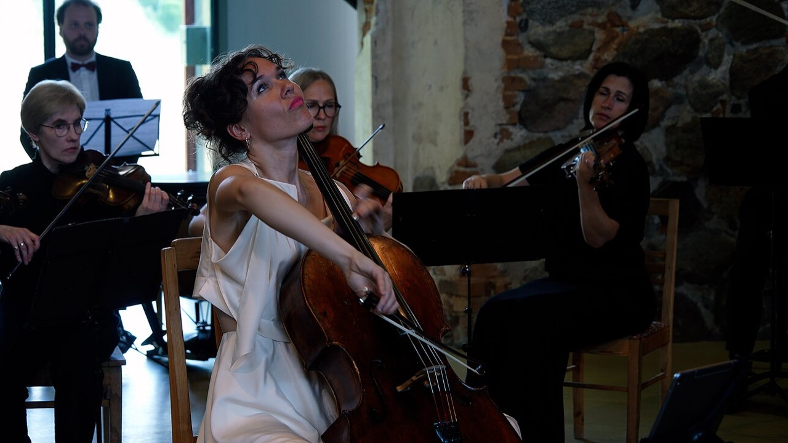
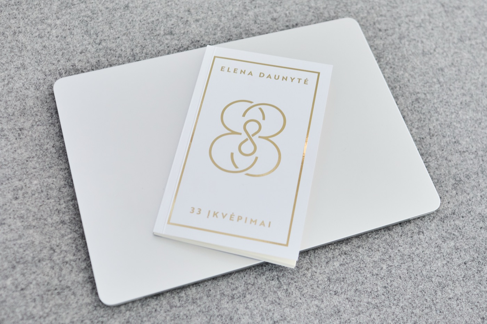
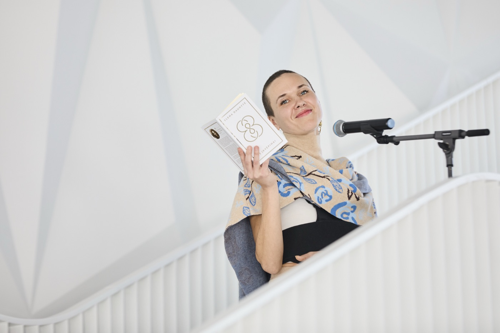
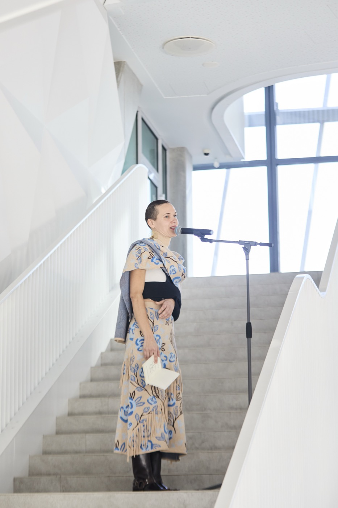
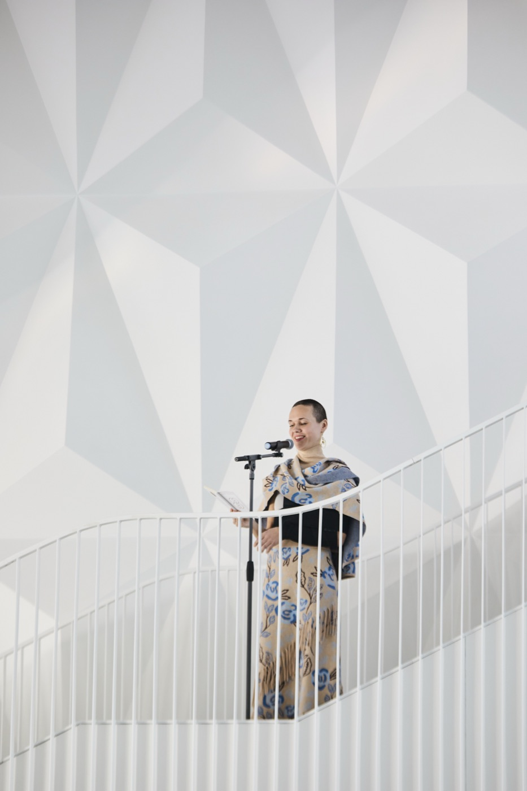
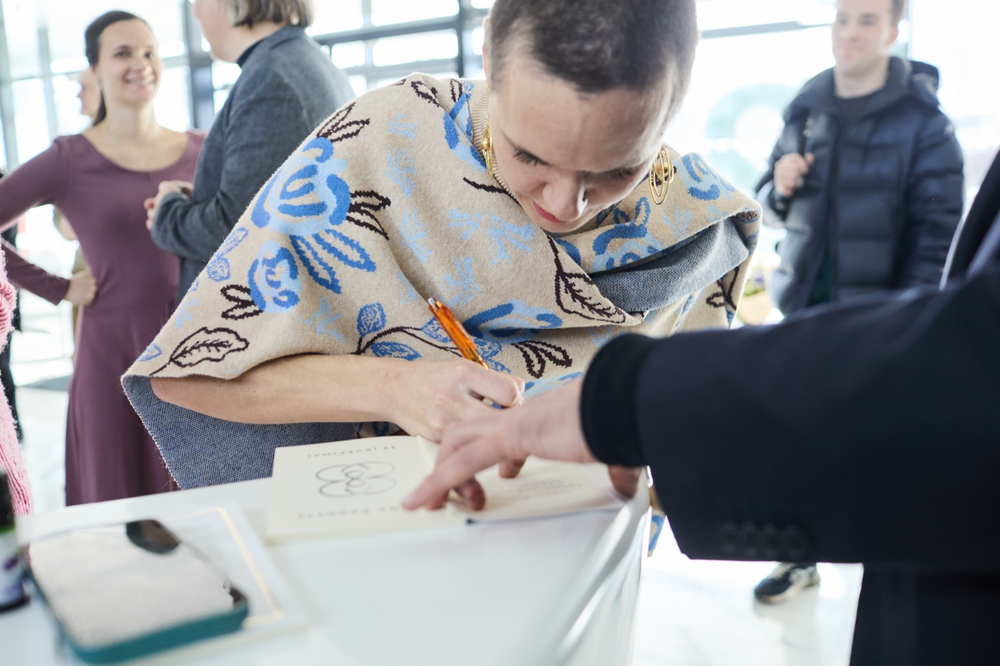
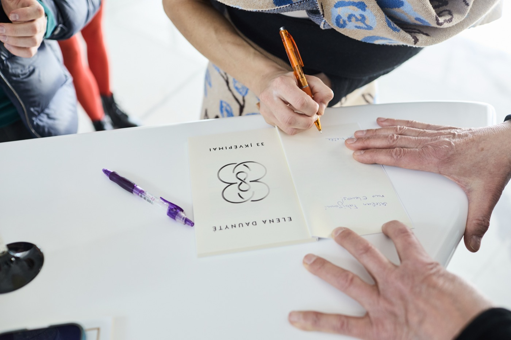
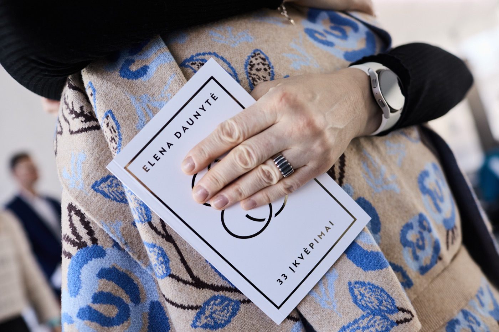

Elena Daunytė
Cellistin und Sängerin
Litauische Cellistin und Sängerin, die den Namen ihres Landes durch Europa und darüber hinaus trägt — Preisträgerin zahlreicher internationaler Wettbewerbe und Grand-Prix-Gewinnerin, Mitglied des Ensembles „Regnum Musicale“ und Musikerin, bei der Klassik auf Improvisation trifft.

Über mich
Musik als Weg, nicht als Ziel
Mehr lesenSchließen
Musik als Weg, nicht als Ziel
Elena Daunytė ist Preisträgerin zahlreicher internationaler Wettbewerbe und Grand-Prix-Gewinnerin, Mitglied des Čiurlionis-Quartetts und des Familienensembles „Regnum Musicale“. Als Solistin und Kammermusikerin ist sie bei Wettbewerben, Festivals und Meisterkursen aufgetreten, deren Geografie von Lettland, Deutschland, der Schweiz, Kroatien, Russland, Österreich, den Niederlanden, Italien, Spanien, Ungarn und dem Vereinigten Königreich bis nach Hongkong, Shanghai und in die USA reicht.
Als Solistin hat sie mit dem Litauischen Kammerorchester, dem Litauischen Nationalen Sinfonieorchester, dem Litauischen Staatlichen Sinfonieorchester, den Orchestern von Riga, Kaunas und der Litauischen Musik- und Theaterakademie sowie den Orchestern des Royal College of Music und Halifax gespielt, unter der Leitung von Andrzej Kosendiak, Jonathan Berman, Modestas Pitrėnas, Sergei Krylov, Saulius Sondeckis, Vilmantas Kaliūnas, Martynas Staškus, Nicholas Simpson und Clark Rundell.
Sie wird regelmäßig eingeladen, solistische Cellopartien bei den Festivals „Vilnius“ und „Gaida“ gemeinsam mit dem Litauischen Kammerorchester und dem Litauischen Nationalen Sinfonieorchester zu spielen, und ihr künstlerischer Weg wurde von der S.-Karosas-Stiftung, dem Fonds zur Förderung von Musikern, Rotary International sowie den Rotary-Clubs Perkūnas und Vilnius unterstützt, in Zusammenarbeit mit dem Litauischen Kulturrat.
Seit mehreren Jahren studiert Elena zudem Gesang bei Professor Vladimir Prudnikov und nimmt vokale Werke in ihre Konzertprogramme auf. Sie experimentiert mit der Verbindung von Cello und Stimme und sucht nach neuen Klangfarben und Möglichkeiten, die beiden Instrumente miteinander zu verschmelzen.
„Am wichtigsten sind Wachstum und die tiefste Freude, die im Prozess der Verbesserung selbst liegt.“
Werdegang
Ausbildung und Entwicklung
Mehr lesenSchließen
Ausbildung und Entwicklung
-
M.-K.-Čiurlionis-Kunstschule
Das Fundament ihrer musikalischen Ausbildung — die Grundlage, auf der eine internationale Karriere entstand.
-
Royal Northern College of Music
Studium an einer der angesehensten Musikakademien Europas.
-
Litauische Musik- und Theaterakademie
Fortgeschrittenes Cellostudium in Vilnius, aktive Vertretung der Akademie bei nationalen und internationalen Veranstaltungen.
-
Meisterkurse
Stetige Weiterentwicklung an der Seite weltbekannter Cellisten.
Eigene Musik
„Laisvės glėby“ (In der Umarmung der Freiheit) · Musikvideo · eigenes Werk für Stimme und Cello · Bezdonys, 2020

„Ryto ugnis“ (Morgenfeuer) · Musikvideo · eigenes Werk für Stimme und Cello · Burgberg Buivydai · LRT · KLIPVID 2021
Solistin mit Orchester
Solistin Elena Daunytė · Dirigent Andrzej Kosendiak (Polen) · Litauisches Kammerorchester · Litauische Nationalphilharmonie, 2022
Solistin Elena Daunytė · Dirigent Jonathan Berman (Vereinigtes Königreich) · Litauisches Nationales Sinfonieorchester · Litauische Nationalphilharmonie, 2023

Elena Daunytė (Cello) · Kammerorchester Šiauliai „Camerata Solaris“ (künstlerischer Leiter und Dirigent Vilhelmas Čepinskis) · Gutshof Paliesius, 2025 · LRT · (ab 34:25)
Poesie
„33 įkvėpimai“ (33 Inspirationen) — Gedichtband in litauischer Sprache. Erschienen im Verlag Slinktys am 6. März 2026; Buchpräsentation am 8. März im Green Hall 2.
Įkvėpime
Kai įkvėpi – nesulaikai juk laiko
Pulsuoti pradeda širdis laikinume
Rimties ritme ji pagreitį išlaiko
Ir sulėtėja tik ramiam iškvėpime.
Bangavime srovės patiri esatį
Iš lėto krūtine laiku iries
Ramiam kvėpavime randi jaukiausią prieglobstį
Savęs nebebijodamas nė kiek.
Įkvėpime – akimirkos jaukumas gimsta
Išsyk plevendamas Kūrėjo delnuose
Iškvėpime paleidi į Pasaulio kismą
Tai, ką įkvėpęs kurstei savyje.
15 € Versand nach Absprache
Buch bestellenBestellungen werden per E-Mail entgegengenommen — wir melden uns mit Zahlungs- und Versanddetails. (Bitte auf Englisch oder Litauisch.)

Fotos von der BuchvorstellungSchließen






Fotos — Gintaras Jonaitis
Gemeinsam
Ensembles und Zusammenarbeit
Mehr lesenSchließen
Ensembles und Zusammenarbeit
Regnum Musicale
Ein mit ihren Schwestern gegründetes Familienensemble, benannt nach der Kulturorganisation ihres Vaters — eine gemeinsame Emotion, ein Gefühlsflug auf der Bühne.
Festivals „Vilnius“ und „Gaida“
Regelmäßig eingeladen, solistische Cellopartien gemeinsam mit dem Litauischen Kammerorchester und dem Litauischen Nationalen Sinfonieorchester zu spielen.
Čiurlionis-Quartett
Eine kammermusikalische Partnerschaft, die klassisches Repertoire mit tiefer musikalischer Chemie verbindet.
Anerkennung
Auszeichnungen und Würdigungen
Mehr lesenSchließen
Auszeichnungen und Würdigungen
Elena ist Preisträgerin zahlreicher internationaler Wettbewerbe und Grand-Prix-Gewinnerin. Für ihr aktives Konzert- und Wettbewerbsschaffen, das den Namen Litauens im Ausland bekannt macht, hat sie wiederholt Anerkennungen der Präsidenten der Republik Litauen erhalten, und für ihre musikalischen Leistungen wurde ihr der Königin-Morta-Preis verliehen.
- Grand Prix bei internationalen Cellowettbewerben
- Anerkennung von Präsident Valdas Adamkus für die Verbreitung des litauischen Namens in der Welt
- Anerkennung von Präsidentin Dalia Grybauskaitė für aktives künstlerisches Wirken
- Königin-Morta-Preis für musikalische Leistungen
- Preisträgerin zahlreicher internationaler Cellowettbewerbe
Kontakt aufnehmen
Konzerte, gemeinsame Projekte oder Presseanfragen — ich freue mich immer über eine Nachricht.